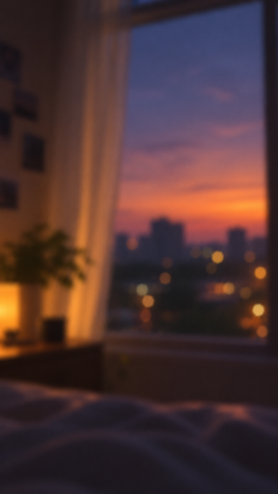
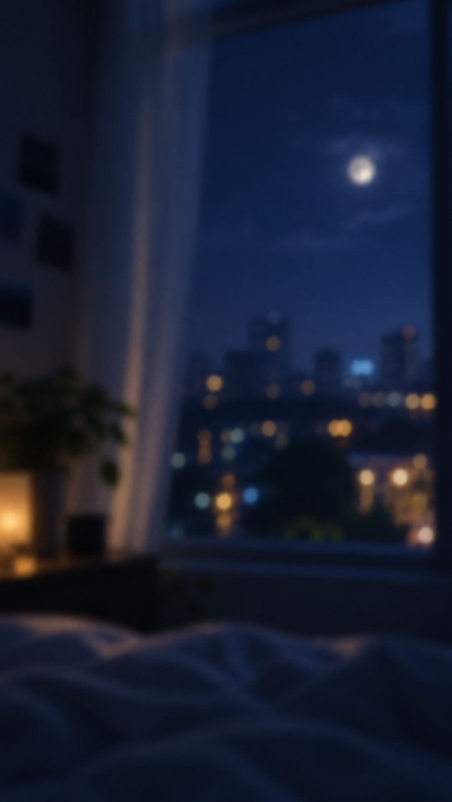

Your music. Your machine. No accounts.
FreQ is a Windows music player built for people who care how their music sounds and how their desktop looks. Stream, shape and share it. Everything stays on your PC.
Free · Windows 10/11 · ~107 MB


A desktop player that sounds as good as it looks.
Library and search
Search songs, artists and albums from any screen. Queue, shuffle, repeat, liked songs, and playlists with your own cover art. An Insights view shows your listening stats.
Audio flavours
Studio, SNR and Nightcore, applied live with zero download. Add the HD 3D or QHD 4D preset and a stereo spatializer.
Synced lyrics
Lyrics from LRCLIB. Tap the album art and the card flips in 3D. Lines scroll with the song and you can click one to seek.
Listen Together
Party rooms for up to 5 people, joined with a 4-digit code. Playback stays in sync and the host controls seek and skip.
Discord presence
Artwork, track, artist and progress on your profile. Public parties show a Join button.
Local-first privacy
No account, no cloud sync, no ads, no tracking. Your library lives in freq_library.json on your PC.
Keyboard shortcuts
Space to play or pause. Ctrl + ← / → for previous and next. ← / → to seek. M or Ctrl + ↑ / ↓ for volume. L to like, S to shuffle, R to repeat, F for fullscreen, Esc to close.
One code. Five seats. Everyone in sync.
- 4-digit room code. Share it and friends join.
- Up to 5 people per room.
- Synchronised playback with host-controlled seek and skip.
- Live listener presence and emoji reactions.
- Public rooms expose a Join button through Discord Rich Presence. Private rooms are code-only.
Real-time DSP, one click away.
Flavours apply live as you listen, with nothing to download.
StudioNormal
Your track as it is.
SNR0.8× tempo
Slower, with procedural convolution reverb.
Nightcore1.2× tempo
Faster, with a pitch lift.
HD 3D
The neutral preset.
QHD 4D
Added clarity plus the stereo spatializer.
3D stereo spatializer
A slider from off up to 2.6× side gain widens the stereo image.
Audio output picker
Choose where sound goes from the top bar. One entry per physical device, and the list follows devices as you plug and unplug them.
Liquid glass, tuned to your clock.
A frameless window with Windows acrylic blur, glass panels with hairline borders, and a custom scrubber. The background changes with the time of day, and you pick the accent. Try one on this page.


Your music, not your data.
Library, playlists, history and settings are stored locally in freq_library.json. Nothing is uploaded.
Download FreQ
Free for Windows 10 and 11. The installer adds a desktop shortcut and enables in-app updates. The portable build runs from anywhere.
The build is not code-signed, so Windows SmartScreen may ask you to confirm the publisher. Click More info → Run anyway.
Questions
Is FreQ free?
Yes. No ads, no subscription, no upsell.
Do I need an account?
No. There is no sign-in and nothing is uploaded.
Is it Windows only?
Yes. FreQ runs on Windows 10 and 11, 64-bit.
Where is my data stored?
In freq_library.json on your PC, next to the app’s local data.
Can I listen with friends?
Yes. Create a party room, share the 4-digit code, and up to five people can join. Public rooms also show a Join button in Discord.
Why does Windows warn me?
The installer is unsigned, so SmartScreen shows an “unknown publisher” prompt. Choose More info → Run anyway.